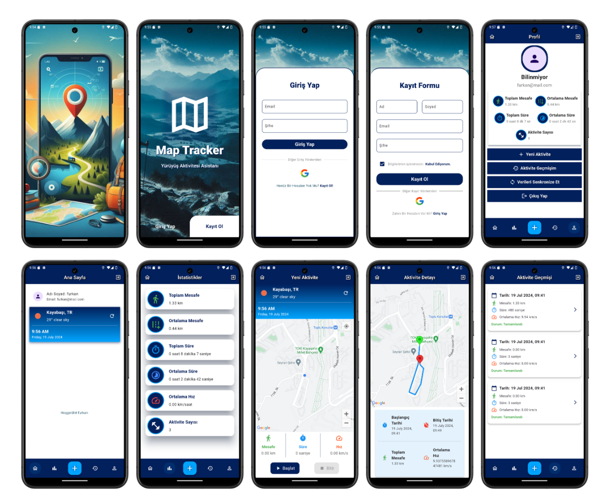

Tanıtım
Bu proje, Flutter kullanarak geliştirilen bir yürüyüş aktivitesi uygulamasıdır. Uygulama, kullanıcıların yürüyüş/koşu aktivitelerini başlatıp bitirmelerini, bu aktivitelerin süresini ve mesafesini hesaplamalarını ve verileri SQLite/SpatiaLite veritabanına kaydetmelerini sağlar. Ayrıca geçmiş aktiviteleri görüntüleme ve detaylarını inceleme imkanı sunar. Uygulamanın diğer önemli özellikleri arasında şunlar bulunmaktadır:
- Kullanıcı dostu arayüz ile kolay gezinme ve kullanım.
- Gerçek zamanlı konum ve rota takibi ile doğru mesafe ve süre hesaplaması.
- Aktivitelerin hem lokal veritabanına hem de Firebase Firestore'a senkronize edilmesi.
- Offline mod sayesinde internet bağlantısı olmadan da aktivite verilerini kaydedebilme.
- Gelişmiş raporlama ve istatistik özellikleri ile kullanıcı performansının izlenmesi.

Not: Bu proje benim ilk Flutter projem olup, 0'dan öğrenerek 3 haftada geliştirdiğim bir çalışmadır. Proje süresince edindiğim deneyimleri ve karşılaştığım zorlukları bu uygulama üzerinde pratiğe dökerek kendimi geliştirdim. Bu nedenle, projede bazı eksiklikler veya hatalar olabilir. Geri bildirimleriniz benim için çok değerli.
Özellikler
1. Splash Ekranı
Uygulama açıldığında 2-3 saniyelik bir logo animasyonu gösterilir.

2. Giriş/Kayıt Ekranı
Google hesabı ile giriş (authentication) yapılır. Kullanıcılar mail, ad, soyad, şifre gibi bilgilerle kayıt olabilir. Kayıt bilgileri Firebase üzerinde tutulur ve login aşamasında bu bilgilerle giriş yapılabilir.

3. Dashboard
Kullanıcının genel profili ve spor durumu (toplam mesafe, toplam süre, aktivite sayısı) gösterilir. Kullanıcının yeni aktivite başlatabileceği ve geçmiş aktiviteleri görüntüleyebileceği butonlar bulunur.
4. Yeni Aktivite Ekranı
Kullanıcı, bu ekranda yürüyüş/koşu aktivitesini başlatıp bitirebilir. Aktif olunan süreçte kullanıcı, mevcut konumunu ve rota bilgisini harita üzerinde görebilir. Aktif aktivitenin toplam mesafesi, geçen süresi ve ortalama hızı anlık olarak güncellenir. Aktivite sonuçları Google Firestore veritabanına kaydedilir. Güncel hava durumu bilgisi OpenWeatherMap API'sinden alınır ve gösterilir.
5. Aktivite Geçmiş Hareketleri İçin Liste Ekranı
Kullanıcının geçmiş aktivitelerini listeleyen bir ekran. Liste satırlarında tarih, yapılan mesafe ve detay butonları yer alır.
6. Aktivite Geçmiş Detay Ekranı
Geçmiş aktiviteler listesinden seçilen detay ekranı açılır. Rota, toplam mesafe ve süre Google Firestore veritabanından alınarak gösterilir.
7. Firebase ve Firestore Veritabanı
Firebase ve Firestore yapılandırması ve veri formatları ile ilgili örnek kayıtlar ve ekran görüntüleri proje içine eklenmelidir.
Önemli Not: Bu projenin son aşamasında bazı hatalar alınabilir. Hataların giderilmesi ve uygulamanın geliştirilmesi amacıyla geri bildirimlerinizi paylaşmanız önemlidir.
Kurulum
Projeyi klonlayın ve gerekli paketleri yükleyin.
git clone https://github.com/Furk4nBulut/Map-Tracker-Flutter.git
cd Map-Tracker-Flutter
flutter pub get
Uygulamayı çalıştırın.
flutter run
Geliştirici Hakkında
Merhaba, ben Furkan Bulut.Bilgisayar Mühendisliği öğrencisiyim. Bu projeyi Flutter öğrenirken geliştirdim. Flutter ile mobil uygulama geliştirme konusunda kendimi geliştirmek istiyorum. Projem hakkında geri bildirimlerinizi paylaşarak bana destek olabilirsiniz.
Katkıda Bulunanlar
Furkan Bulut
İletişim
Herhangi bir sorun veya öneriniz olursa lütfen benimle iletişime geçin.